在本节，我们主要介绍以下两种紧急全双工单呼的发起/接听方式：
1）在系统操作菜单栏中单击［调度功能/呼叫面板］，弹出“呼叫面板”对话框。
2）单击“呼叫业务”模块中的“紧急呼叫”，弹出“紧急呼叫”对话框。输入终端标识，系统自动获取用户对应的姓名、所属单位以及编号。
3）选择“呼叫方式”为“电话模式”，如图1.1所示。
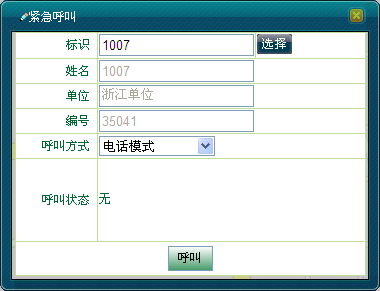
图1.1 选择电话模式
4）单击＜呼叫＞按钮，此时＜呼叫＞按钮变为＜挂断＞按钮，如图1.2所示。
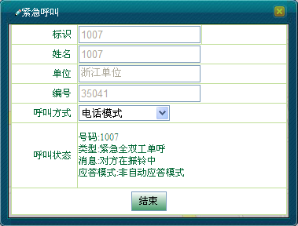
图1.2 对方在振铃中
5）如果收到正常的回铃音且对端用户摘机后，则开始通话，如图1.3所示。
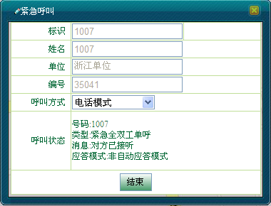
图1.3 正在通话中
6）通话结束后，调度员单击＜挂断＞结束呼叫，此时＜挂断＞按钮变为＜呼叫＞按钮，如图1.4所示。
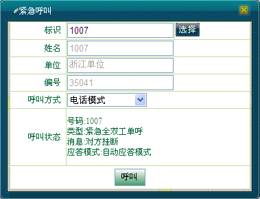
图1.4 结束通话
 说明：
说明：
若调度员对未注册的用户发起紧急全双工单呼，则会收到“对方挂断”的呼叫消息。
1）若调度台接收到用户“1008（1008）”发起的紧急全双工呼叫请求，此时用户的右上角会有紧急呼叫图标显示 ，“紧急呼叫”对话框如图1.5所示。
，“紧急呼叫”对话框如图1.5所示。
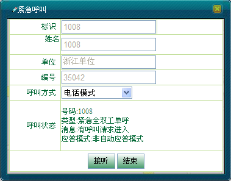
图1.5 呼叫请求进入
2）调度台单击＜接听＞即可通话，并能收到一系列的呼叫消息，如图1.6所示。
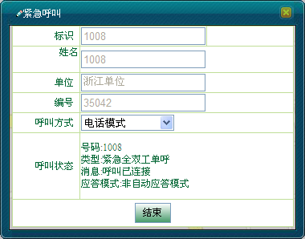
图1.6 呼叫已连接
3）通话结束后，调度台单击＜挂断＞结束呼叫。
1）若调度台接收到用户“1008（1008）”发起的紧急全双工单呼请求，此时，在呼叫上行面板中显示如图2.1所示。
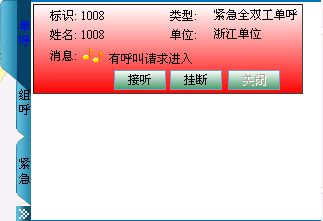
图2.1 有呼叫请求进入
2）单击＜接听＞按钮即可进行通话，此时＜接听＞、＜关闭＞两个按钮变灰，如图2.2所示。调度员也可单击＜挂断＞拒绝通话。
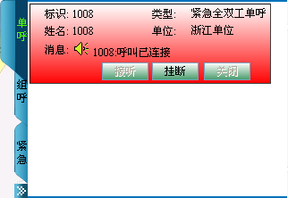
图2.2 呼叫已连接
3）调度员单击＜挂断＞按钮或者终端挂断即可结束本次呼叫，此时＜呼叫＞、＜关闭＞按钮可用，＜挂断＞按钮变灰，如图2.3所示。
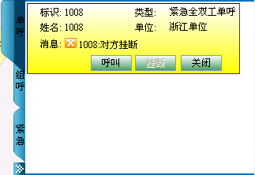
图2.3 结束紧急全双工单呼
1）选中呼叫上行面板中的紧急全双工单呼面板，单击＜呼叫＞按钮，此时＜呼叫＞、＜关闭＞两个按钮变灰，如图2.4所示。
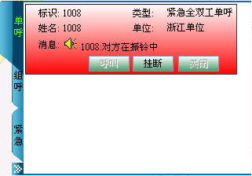
图2.4 对方在振铃中
2）对方接听后，呼叫建立，双方可以同时输入语音信号，并能同时接收到对方语音信息，面板显示如图2.5所示。
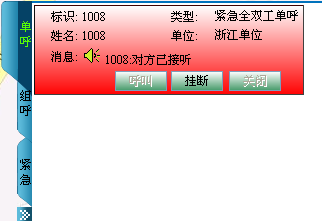
图2.5 对方已接听
3）调度员单击＜挂断＞按钮或者终端挂断即可结束本次呼叫，此时＜呼叫＞、＜关闭＞按钮可用，＜挂断＞按钮变灰。
说明：
在呼叫上行面板中，调度员只能对已有紧急全双工单呼上行记录的终端发起紧急全双工单呼。
Copyright © 2012 Eastcom, Inc. All rights reserved. |
||